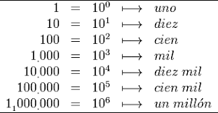

¿Qué es el sistema decimal?
El sistema decimal es el sistema de numeración más utilizado en la vida cotidiana. Es un sistema de base 10, lo que significa que utiliza diez símbolos diferentes para representar todos los números.
Estos símbolos son: 0, 1, 2, 3, 4, 5, 6, 7, 8 y 9. A partir de estos dígitos se pueden formar todos los números que usamos para contar, medir y realizar cálculos.

El sistema decimal es llamado también sistema de numeración posicional, porque el valor de cada dígito depende de la posición en la que se encuentra dentro del número.
Valor posicional en el sistema decimal
En el sistema decimal cada posición representa una potencia de 10. Esto significa que cada lugar dentro de un número tiene un valor diferente dependiendo de su posición.
Las posiciones principales son:
Unidades (10⁰)
Decenas (10¹)
Centenas (10²)
Unidades de mil (10³)
Cada vez que avanzamos una posición hacia la izquierda, el valor se multiplica por 10.
Ejemplo de valor posicional
Tomemos el número:
347
En este número cada dígito tiene un valor diferente según su posición.
3 × 100 = 300 (centenas)
4 × 10 = 40 (decenas)
7 × 1 = 7 (unidades)
Si sumamos los valores obtenemos nuevamente el número original:
300 + 40 + 7 = 347
Representación de números grandes
Gracias al valor posicional el sistema decimal permite representar números muy grandes de forma sencilla. Solo es necesario añadir más posiciones hacia la izquierda.
Por ejemplo:
1,245
Se interpreta como:
1 × 1000 = 1000
2 × 100 = 200
4 × 10 = 40
5 × 1 = 5
Sumando todos los valores:
1000 + 200 + 40 + 5 = 1245
Importancia del sistema decimal
El sistema decimal es fundamental en matemáticas, ciencia, ingeniería y en la vida diaria. Es el sistema que utilizamos para contar objetos, manejar dinero, medir distancias y realizar operaciones matemáticas.
Código Decimal a Binario
Código Decimal a Octal
Código Decimal a Hexadecimal
Código del conversiones
#include<iostream>
using namespace std;
class conversion {
public:
int vendicmal;
void vdecimal(){
//==============================
// Conversión de Decimal a Binario
//==============================
cout<<"CONVERSION DE DECIMAL A BINARIO" <> vendicmal;
}
};
class binario : public conversion {
public:
string vbinario = "";
void pedirDecimal(){
vdecimal();
}
void convertir(){
if (vendicmal == 0) {
cout << "Binario: 0" << endl;
return;
}
int i = vendicmal;
while (i > 0) {
int residuo = i % 2;
vbinario = to_string(residuo) + vbinario;
i = i / 2;
}
cout << "El valor en binario es : " << vbinario << endl;
}
};
int main(){
binario b;
b.pedirDecimal();
b.convertir();
return 0;
} #include<iostream>
#include
using namespace std;
class Octalad {
public:
void mesaje (){
cout<<"CONVERSION DE DECIMAL A OCTAL"<>vdo;
}
void convertirdo(){
if (vdo == 0) {
cout << "Octal: 0" << endl;
return;
}
int i = vdo;
while (i > 0) {
int residuo = i % 8;
voctal = to_string(residuo) + voctal;
i = i / 8;
}
cout << "El valor en octal es: " << voctal << endl;
}
};
int main (
){
Octalad od;
od.mesaje ();
od.pedirvdo();
od.convertirdo();
return 0;
}
#include<iostream>
#include
using namespace std;
class daHexadecimal {
public:
string vhex = "";
int vde;
void pedirvde(){
cout << "CONVERSION DE DECIMAL A HEXADECIMAL" << endl;
cout << "Ingrese el valor decimal:" << endl;
cin >> vde;
}
void convertirdah(){
string hex = "0123456789ABCDEF";
if (vde == 0){
cout << "Hexadecimal: 0" << endl;
return;
}
int i = vde;
while(i > 0){
int residuo = i % 16;
vhex = hex[residuo] + vhex;
i = i / 16;
}
cout << "El valor en hexadecimal es: " << vhex << endl;
}
};
int main () {
daHexadecimal dah;
dah.pedirvde();
dah.convertirdah();
return 0;
}